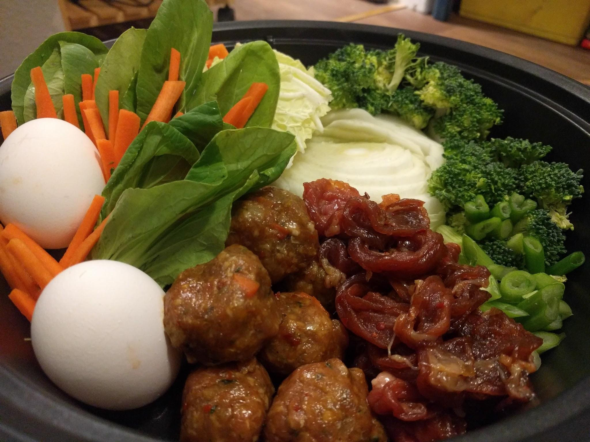

Miso Hot Pot

Ok, so not to brag or anything, but this hot pot tasted like heaven for tongues. . . . if that’s even possible giggles, tongue heaven, sorry mental image. Back to the topic at hand; the broth was miso-ey, rich and meaty with bonito and juices from the sweet but kinda spicy marinated beef and ginger/garlic pork meatballs. And if you’ve never had veggies boiled in such a broth, you’re sorely, I mean **sorely, missing out. Pair this with freshly steamed rice, and be sure to lay a piece of homemade kimchi over that meat. The flavor almost made me swoon. And I’m not the swooning type. My boyfriend laughed at first, tried it, then just shook his head and closed his eyes. Then did it again, and again, until we were fighting over the last piece of spicy fermented cabbage. We nitpicked and filled each others bowls with tender meat, succulent vegetables, and rich broth, occasionally adding more meat to the pot, drinking beer and revelling in each others company and the joy of cooking and sharing an excellent meal together. Do not, for the love of God or Buddha or whoever, eat this alone. I mean it, no solitary eating** over a dish like hot pot that evolved around the concept of family and communion. So with that, here we go, let’s make some hot pot!
Ingredients :
Thinly sliced eye of round or any type of thinly sliced meat. Occasionally I use pork belly or ribeye. Some people use shrimp, clams, or fish to make a seafood hot pot. It’s really up to you and your friends and family’s preferences. This go round I used some leftover ground pork from some cabbage rolls I made two days back that I had frozen. Waste not want not and all that jazz. Oh! And some delicious lean eye of round.
An assortment of veggies. Whatever you like really, I used what I like (naturally), and it was also what I had in my fridge at the time. Rounds of napa cabbage, some baby bok choy, or pak choi as the lady at the Asian supermarket kindly informed me, some broccoli also went into the mix, as well as some matchstick carrots and diced green onion. I also added a generous portion of my homemade kimchi as a small side dish, and it’s super healthy for your gut, so go wild!
Some farm-fresh eggs perhaps
Jasmine rice
For the Broth :
About 5-6 cups of water, enough to fill your hot pot.
About 6 bulbs of garlic, and a good inch of ginger root, peeled and crushed/finely chopped with the garlic (some of this will go into the meat marinade so save a good ½ tbsp or so).
A fat heaping tablespoon of light miso
A half sheet of kombu
A heaping cup of bonito flakes
¼ cup soy sauce
About 4-5 tablespoons of mirin (sweet rice wine), you can also add a splash of sake if you have it. . . . . and maybe take a shot. . . . or two, or four. It’s a party right?
For the Meat and Marinade :
½ lb of ground pork, if you want to make the meatballs that I did in the pictures.
A pack of thinly sliced eye of round, or any thinly sliced meat.
½ cup of soy sauce, both for the pork and other meat that you have.
A splash of mirin
Finely chopped green onion and carrots (for the meatballs)
Some ground black pepper
About ⅓** a cup brown sugar**.
One tablespoon chili flakes, or preferably ground korean chili flakes.
The How-to :
Firstly, soak your half sheet of kombu in the 5-6 cups of water for at least 30-45 minutes. So you can do this and sit on your ass while it’s soaking, doing whatever.
Or, you could start chopping your veggies.
After your veggies, if you chose this route, you can start your rice. I recommend rinsing your rice at least twice under cold water before cooking. This removes any extra starch around the rice kernels and therefore makes the finished product more fluffy and flavorful. Remember, fluffy rice is always nice. Oh, just a tip, if you want you can use a rag to cover that annoying hole in your pot while your rice cooks. This helps trap the moisture and therefore makes your rice fluffier. This is for people who don’t own a rice cooker (ugh I want one so bad).
For the meatballs, mix your pork with about a tablespoon of soy sauce, about 3 heaping tablespoons of finely chopped carrot and green onion, about a tablespoon of crushed garlic and ginger, a splash of mirin, and some ground pepper and salt. If you like your meatballs spicy, you can add a touch of korean chili flakes.
After your veggies, rice, and meatball prep you can mix together your meat marinade. Add the ⅓ brown sugar, ½ soy sauce, 6 garlic bulbs and and an inch of ginger (remember to reserve some for the meatballs), 1 tablespoon of korean chili flakes, that splash of mirin, and some sake if you have it, as well as some roughly chopped green onion.
Delicately mix your thinly sliced meat and meatballs in the marinade, and set aside to do it’s thing.
At this point you can finish your broth. Bring your kombu pot to a boil and immediately remove the kombu once it starts to boil (WARNING, make sure to not boil the kombu, it’ll turn your broth all slimy and icky if you do). Once you remove your kombu, discard it, and toss in your bonito flakes. Turn your pot on low, cover, and let steep for about 15 minutes. After you let it steep, strain the broth to remove the bonito flakes, return the resulting broth to your pot and allow some ginger and garlic to steep in the broth using a tea ball or small strainer set into the broth. Or I mean hell you can throw the garlic and ginger in there and strain it again, that’s kind of a hassle though in my opinion. Add the heaping tablespoon of light miso to dissolve in the broth and a splash of soy sauce and mirin.
While your broth is working, arrange your veggies and some meat in your hot pot, reserving some meat and maybe some veggies on a plate to cook as the meal goes on.
Pour your strained broth over the veggies in your hot pot and spoon some of your (hopefully) fluffy rice into serving bowls. I also poured a touch of my meat marinade in there, no worries, the heat will kill of any harmful bacteria. Grab some chopsticks and a ladle, whatever pickled side dishes and sauces you want, as well as the rest of your reserved meat and veggies, and meet your friends and family around the pot.
Cover your hot pot with the lid and turn the heat on to simmer. While your first course is bubbling away, chat with your friends or family, drink a beer or take a shot, flirt with your longtime crush. The point is, have fun with your people, enjoy their company. Laugh until your gut hurts, and your eyes water. After all, that’s the main component of any hot pot meal : enjoying a delicious meal with your friends and family.
When the first batch is done, eat away, add more food to the pot as it’s eaten, and please - enjoy.
Also, I realize this may seem like quite a bit of work, but honestly it’s all prep work. The actual cooking is done around your cooking vessel with your peeps. And if you enjoy cooking just as much I do, you’ll enjoy shuffling barefoot around your kitchen with a beer in your hand listening to your favorite music for an hour while you prep for a truly, soon-to-be memorable meal with your friends and family.